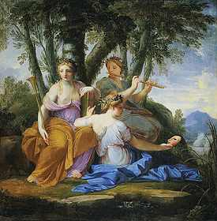

Eustache Le Sueur
1616-1655
Clío, Euterpe y Talía
Hacia 1652
Tabla A 1,30 m; L 1,30 m
INV 8057
Es casi imposible hacerse una idea justa de la pintura del siglo XVII sin evocar los grandes conjuntos desaparecidos que adornaban los palacetes parisinos de nueva construcción. A pesar de que fue desmantelada en 1776, la decoración pintada por Le Sueur para el Hôtel Lambert en la isla de Saint-Louis constituye uno de los más completos vestigios (13 cuadros en el museo del Louvre). Este panel, en el que se reúnen las musas de la Historia, de la Música y de la Comedia, forma con otros cuatro un Concierto de las nueve musas, colocado en la alcoba de la presidente Lambert de Thorigny.